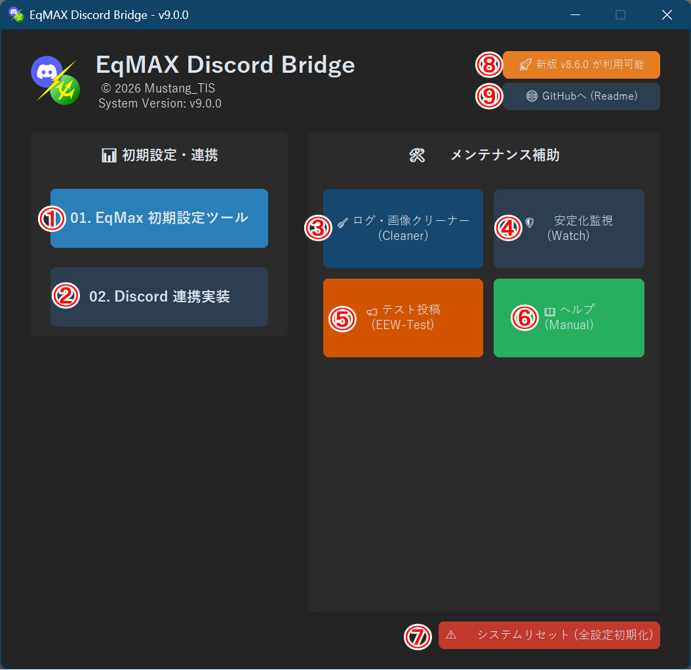
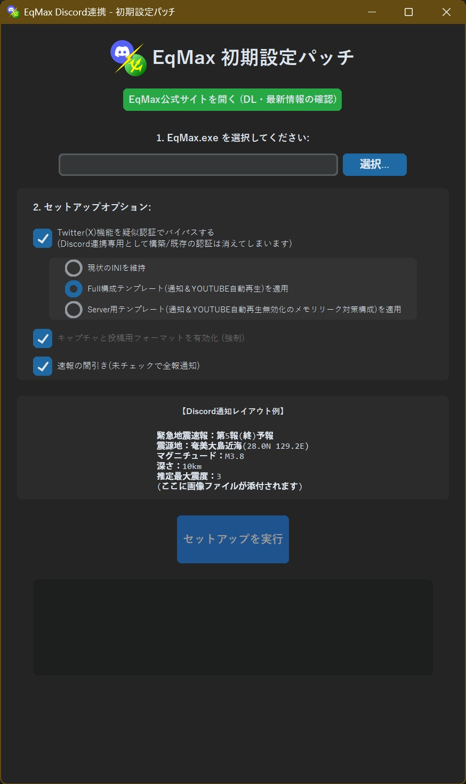

EqMax最適化アプリ

総合ハブの
EqMax-最適化設定 (③の部分)を実行してください。 初期設定ツールの機能

- EqMaxの公式サイト: 公式サイトから最新版をダウンロードしてください。
- EqMax.exeの選択: ファイルを選択します。
- Twitter(X) 疑似認証(Dummyモード): バイパス設定を強制します。
構成設定の比較
| 設定 | EEW | YouTube | 読み上げ | Dummy | メモリ |
|---|---|---|---|---|---|
| 現状維持 | 現状 | 現状 | 現状 | 強制 | 現状 |
| Full構成 | ○ | ○ | ○ | 強制 | 大 |
| Server用 | × | × | × | 強制 | 小 |